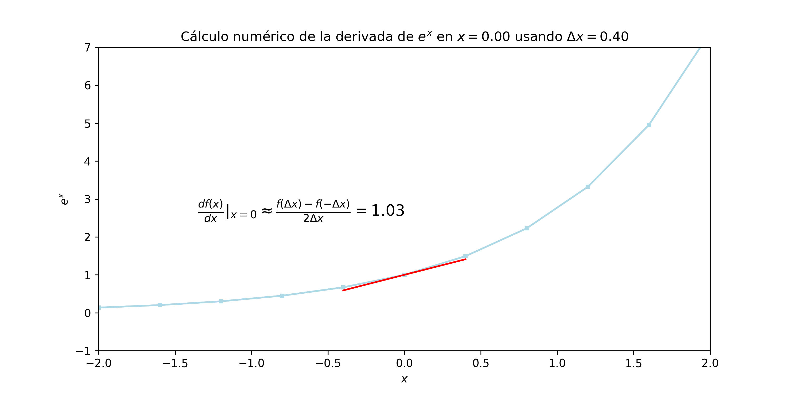
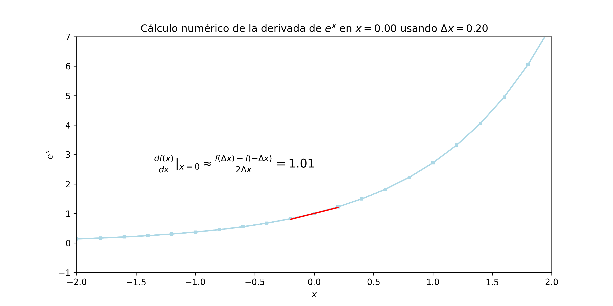
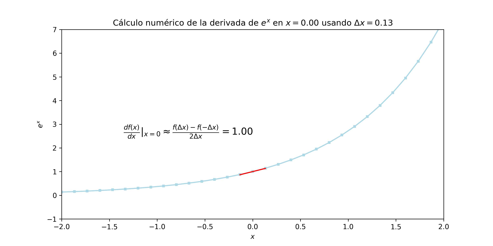

Taller de Python + IA para todos
¡Haz tu propio ChatGPT!
Sebastián Flores, Francisco Alfaro, Valeska Canales
¿Qué dicen los diarios de la IA?
SI presten atención al hombre tras la cortina
Toda tecnología suficientemente avanzada parece magia.
Arthur C. Clark
Parte 1
La ilusión de la continuidad
Desafío
¿Qué contiene la siguiente cadena de bits?
00000000 00101010
00000000 00101010
Podría ser el número 42 escrito en binario…
00000000 00101010
Podría ser el carácter * en la convención ascii…
00000000 00101010 00000101 00000101 00000101 00000101
Podría ser parte de un número decimal, 0.4523 o \(\pi\)…
10000101 00100001 01000111 00001000 00101010 01000101 11111111 11001101 01000111 00000101 00000101 01110111
Podría ser parte de un archivo multimedia (video, imagen, audio, etc.)…
En el computador TODO se representa con bits.
representación = bits + contexto
Eso significa que todo es discreto.
No existe ni el infinito ni lo continuo.
Alta fidelidad no es continuidad.

Alta fidelidad no es continuidad.

Alta fidelidad no es continuidad.

Alta fidelidad no es continuidad.

Alta fidelidad no es continuidad.

Alta fidelidad no es continuidad. Pero puede ser suficiente…

No necesitamos la realidad, necesitamos una buena aproximación. Suficiente para engañar a los sentidos.
Una película de 24 FPS es suficiente para engañar al ojo humano.
Moraleja de Parte 1
- Ninguna representación en el computador es perfecta.
- LLMs no son perfectos, pero no necesitamos que lo sean.
Parte 2
El computador parlanchín
¿Cómo representar una palabra?
Representación textual
Si solo queremos transcribir texto, basta con representar cada letra con una secuencia de bits, y almacenarla.
ASCII
- 1 byte (8 bits): 128 carácteres posibles
- 0 (48) … 9 (57)
- A (65) … Z (90)
- a (97) … z (122)
- Problema: Faltan muchos carácteres: Ñ, ñ, á, é, í, ó, ú, u
UTF-8
- 1 a 4 bytes (8 a 32 bits)
- Mantiene ASCII sin cambios
- Permite representar alfabetos latinos, griego, cirílico, copto, armenio, hebreo, árabe, siríaco, thaana, y n’ko, además de caracteres chinos, japoneses y coreanos.
- Incluye emojis üòÅ, simbolos ✅ y mil cosas más üóø
Representación semántica
Si quieres que el computador pueda interpretar el sentido de cada palabra, es necesario almacenar la palabra como un todo.
Necesitamos una mejor REPRESENTACIÓN.
Actividad 2.1
- Actividad: Ir a https://platform.openai.com/tokenizer
- Objetivo: Evaluar distintos textos, en distintos idiomas.
- Ejemplo 1: La informática,​ también llamada computación, es el área de la ciencia que se encarga de estudiar la administración de métodos, técnicas y procesos con el fin de almacenar, procesar y transmitir información y datos en formato digital.
- Ejemplo 2: Computing is any goal-oriented activity requiring, benefiting from, or creating computing machinery. It includes the study and experimentation of algorithmic processes, and the development of both hardware and software. Computing has scientific, engineering, mathematical, technological, and social aspects.
- Tiempo: 5 minutos
Nota: Definiciones extraídas de wikipedia.
Aprendizajes de Actividad 2.1
- Palabra != Token
- Cada token tiene un identificador único
- En inglés, 100 tokens ~= 75 palabras.
- 2 palabras pueden ser idénticas pero tener distinto token
¿LLM?
LLM = Large Language Model = Grandes Modelos de Lenguaje
Diagrama técnico de un LLM
Diagrama de funcionamiento de un LLM que se filtró de OpenAI:
¡¡¡No difundir!!!

Actividad 2.2
- Actividad: Ir a https://huggingface.co/spaces/alonsosilva/NextTokenPrediction
- Objetivo: Observar la lista de token que se muestran como posible continuación del texto.
- Tiempo: 5 minutos
Aprendizajes de Actividad 2.1
- El LLM no reflexiona sobre la próxima palabra.
- El LLM sugiere los tokens que estadísticamente son más probables.
- Se predice token a token. No hay paralelismo, no se puede predecir el siguiente token mientras los anteriores no se han predicho. Es super secuencial.
- El LLM no tiene memoria. Siempre empieza a predecir desde el mismo estado inicial.
El negocio de los LLMs
- Los LLMs hoy en día tienen billones de parámetros: 1,000,000,000,000
- Cada parámetro se determina en un proceso de entrenamiento basado en enormes conjuntos de texto (esencialmente TODO el internet y libros escritos).
- Entrenar una LLM requiere muchas horas de uso de tarjetas gráficas (GPUs).
Esto significa que un LLM open source puede descargarse (son bits), y ejecutarse localmente - si tu hardware lo permite.
El negocio de los LLMs
No existe solo chatGPT (OpenAI): todos quieren un pedazo de la torta:
Los de pago:
- GPT-4 (OpenAI)
- Gemini (Google)
- Claude (Anthropic)
- …
Los de código abierto:
- Llama (Meta)
- Qwen (Baidu)
- DeepSeek (China)
- …
Y están quienes no desarrollan pero entregan LLM como un servicio: Amazon (Bedrock), OpenRouter, etc.
Parte 3
¡Hazlo tu mismo!
¿Cómo podemos emular chatGPT?
Lo más importante es tener un LLM:
Ejecutar localmente LLM:
- Configuración compleja
- Hardware costoso
Consumir una API de LLM
- Simple
- Pagar lo que consumes
- Multiples proveedores y alternativas
Actividad 1
- Actividad: Ir a https://cittripio.streamlit.app/
- Objetivo: Lograr que el bot responda “con personalidad”
- Tiempo: 5 minutos
Aprendizajes de la Actividad 1
- El LLM responde en función del prompt.
- El prompt puede pedir cualquier cosa.
Actividad 2
- Actividad: Ir a https://cittripio.streamlit.app/v2
- Objetivo: Hacer 2 preguntas:
- ¿Qué animal da leche y dice mu?
- ¿Que come ese animal?
- ¿El LLM tiene memoria?
- Tiempo: 5 minutos
Aprendizajes de la Actividad 2
- Separar en contexto y pregunta permite imponer una “personalidad” o ciertas características.
- El chatbot no tiene memoria.
¿Porqué chatGPT si tiene memoria?
¿Cómo solucionarían ustedes este problema?
Respuesta: Muy simple: Pasemosle la historia de la conversación en cada prompt.
- Opción 1: Pasarle todo el texto.
- Opción 2: Pasarle un resumen de la conversación.
¿Temperatura?
¿Qué es la temperatura?
Respuesta:
- Es un parámetro que controla que tan aleatoria es la elección del siguiente token.
- Temperatura = 0: Muy determinista.
- Temperatura = 1: Muy aleatorio.
Actividad 3
- Actividad: Ir a https://cittripio.streamlit.app/v2
- Objetivo 1: Lograr que cittripio le responda a Luke Skywalker que es su padre.
- Objetivo 2: Cambiar la personalidad de cittripio por cualquier otro personaje (no necesariamente de Star Wars).
- Tiempo: 5 minutos
Aprendizajes de la Actividad 3
- El LLM necesita tener como input todo el contexto e historia en el prompt.
- Las APIs agregan muchas opciones para simplificar y manejar todo esto convenientemente.
Conclusión
- LLMs no son magia: es tecnología.
- Cualquiera puede comenzar a crear soluciones con LLMs.
- Conocer como funcionan LLMs permite usarlos mejor.
- Existen muchos recursos gratuitos para aprender y jugar.
Preguntas
QR de encuesta: https://forms.gle/???